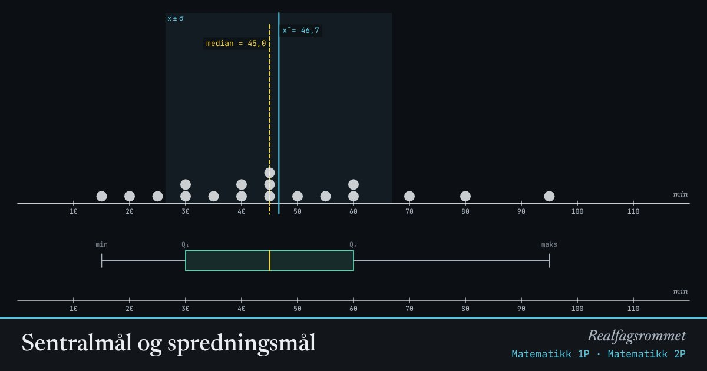

Sentralmål og spredningsmål
Hvert punkt er en elev og hvor mange minutter hun brukte på lekser. Flytt punktene, legg til en uteligger, og se hvilke mål som endrer seg mest.
Start animasjonen
Formler
Om animasjonen
Gjennomsnittet (blått) er balansepunktet: tenk deg at punktene er like tunge lodd på en vippe.
Medianen (gul) er den midterste verdien når tallene står i rekkefølge. Den bryr seg ikke om hvor langt ute uteliggerne er.
Standardavviket måler hvor langt verdiene i snitt ligger fra gjennomsnittet. Boksplottet nederst viser kvartilene: halvparten av dataene ligger inne i boksen.
Standardavviket over deler på . Regner du med et utvalg, deler du ofte på i stedet (vist som ).
Prøv dette
- Legg til en uteligger. Hvilket mål flytter seg mest: gjennomsnittet eller medianen?
- Lag et datasett der gjennomsnitt og median er like.
- Gjør standardavviket så lite som mulig uten å fjerne punkter.
- Når er medianen et bedre mål enn gjennomsnittet? Gi et eksempel fra virkeligheten.
Kompetansemål
- Matematikk 1P: Statistikk og sentralmål
- Matematikk 2P: Sentralmål og spredningsmål